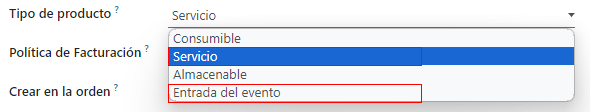
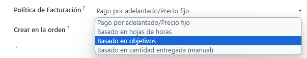
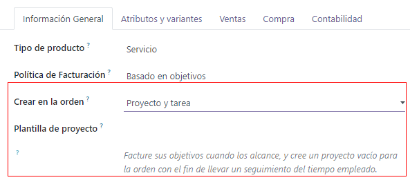
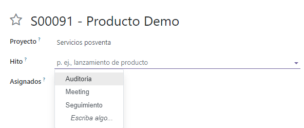
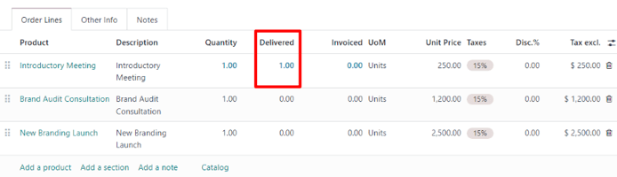
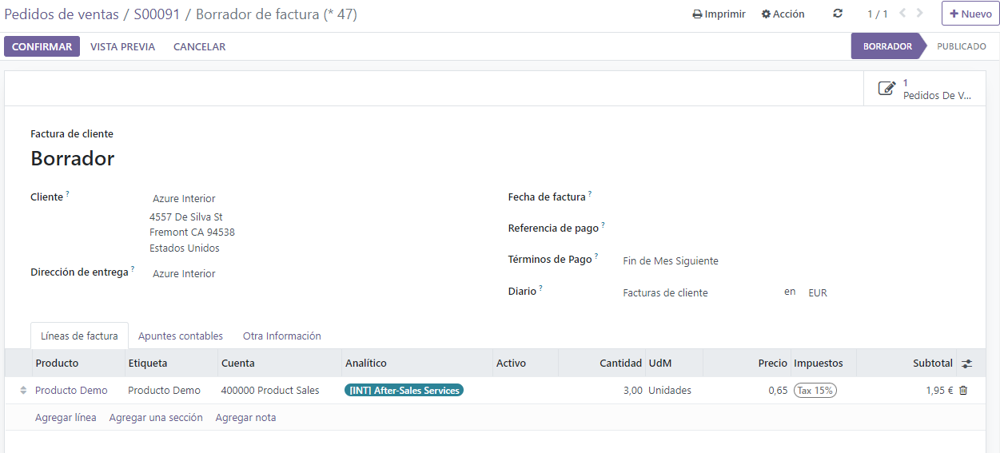
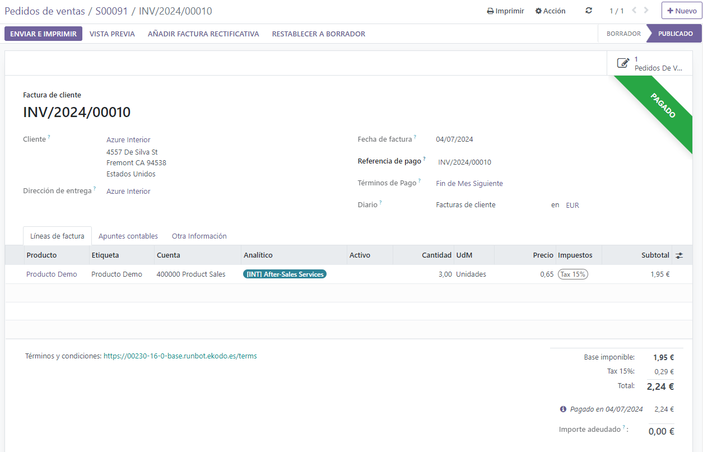

Facturar objetivos de proyecto¶
La facturación basada en hitos del proyecto se puede utilizar para proyectos costosos o de gran escala. La serie de hitos en un proyecto representa una secuencia clara de trabajo que inevitablemente resultará en la finalización de un proyecto y/o contrato.
Este método de facturación garantiza que la empresa obtenga un flujo constante de dinero durante toda la vida del proyecto. Los clientes pueden monitorear de cerca cada fase del desarrollo del proyecto a medida que ocurre, además de pagar una gran factura en varias cuotas, en lugar de todo de una vez.
Crear productos de objetivo¶
En Odoo, cada objetivo de un proyecto se considera como un producto individual.
Para crear y/o configurar productos para que funcionen de esta manera, primero vaya a la aplicación . Luego, haga clic en un producto, o cree uno nuevo mediante el botón Nuevo.
La opción de facturar según los objetivos solo está disponible para ciertos tipos de productos.
On the product form, under the General Information tab, the Product Type field must be set on any of the following options: Service, or Entrada del evento.
Con cualquiera de esas opciones de tipo de producto seleccionadas, elija según los objetivos del menú desplegable política de facturación.
Debajo de eso está el campo crear en orden.
Para garantizar que los flujos de trabajo sean lo más fluidos posible, se recomienda seleccionar una opción en el campo crear en orden.
Nota
Dejarlo en la opción predeterminada Nada no afectará negativamente el flujo de trabajo deseado. Sin embargo, debe crear un proyecto directamente desde un formulario de orden de venta con ese producto específico. Una vez que crea un proyecto, entonces se pueden crear y configurar objetivos y tareas.
Una vez que haga clic en la opción predeterminada crear en orden de Nada, verá un menú desplegable con las siguientes opciones:
Tarea:: Odoo crea una tarea relacionada con este producto de objetivo en la aplicación Proyecto cuando se realiza una orden con este producto específico.
Proyecto y tarea:: Odoo crea un proyecto y una tarea relacionada con este producto de objetivo en la aplicación Proyecto cuando se realiza una orden con este producto específico.
Proyecto:: Odoo crea un proyecto relacionado con este producto de objetivo en la aplicación Proyecto cuando se realiza una orden con este producto específico.
Si selecciona Tarea, aparecerá el campo Proyecto. En este campo, seleccione a qué proyecto existente en la aplicación Proyectos debe estar conectada esta tarea creada.

Si selecciona proyecto y tarea o proyecto, aparecerán dos nuevos campos: plantilla de proyecto y plantilla de espacio de trabajo.
El campo plantilla de proyecto proporciona opciones de plantilla para usar en el proyecto que se creará cuando se ordene este producto específico.
El campo plantilla de espacio de trabajo proporciona opciones de plantilla para usar en el espacio de trabajo (en la aplicación Documentos, no la aplicación Proyecto) que se generará automáticamente para el proyecto cuando se ordene este producto específico.
Truco
Para fines organizativos, haga clic en la pestaña Ventas en el formulario del producto y escriba una descripción personalizada relacionada con los “objetivos” en el campo descripción de ventas. Esta información aparece en la columna descripción en la pestaña líneas de la orden de la orden de ventas.
También puede editar/modificar directamente el campo descripción en la pestaña líneas de la orden de la orden de venta.
Esto no es un requisito.
Facturar objetivos¶
Nota
El siguiente flujo presenta un trío de productos de objetivo que tienen Servicio establecido como su tipo de producto y tarea establecida en su campo crear en orden.
Esas tareas se adjuntan a un proyecto preexistente, que en este caso se titula proyectos de cambio de marca.
Si desea facturar objetivos, cree una orden de venta con los productos del objetivo. Para hacerlo, vaya a la aplicación . Al hacerlo, se mostrará un formulario vacío de cotización.
Desde este formulario de cotización, agregue un cliente. Luego, haga clic en agregar un producto en la pestaña líneas de la orden. A continuación, agregue los productos de objetivo a la pestaña líneas de la orden.
Una vez que se hayan agregado los productos correspondientes al objetivo, haga clic en confirmar para confirmar la orden, esto convierte la cotización en una orden de venta.
Al confirmar la orden, aparecerán nuevos botones inteligentes en la parte superior de la orden de venta según lo seleccionado en el campo crear en la orden en el formulario del producto.
En la orden de venta, haga clic en el botón inteligente objetivos. Al hacerlo, se mostrará una página en blanco de objetivos. Haga clic en nuevo para agregar objetivos.

Ingrese un nombre para el objetivo. A continuación, aplíquelo al artículo en la orden de venta correspondiente. También puede asignar una fecha límite al objetivo.
Repite ese proceso para todos los elementos de la orden de venta de objetivos.
Luego, regrese a la orden de venta, a través de las migas de pan. En la orden de venta, haga clic en el botón inteligente tareas. Al hacerlo, podrá ver la página tareas con una tarea para cada artículo de la orden de venta con esa opción designada en el campo crear en la orden.
Si desea asignar manualmente un objetivo configurado a una tarea, haga clic en la tarea deseada, lo que revela el formulario de la tarea. En el formulario de la tarea, seleccione el objetivo apropiado al que esta tarea debe estar conectada, en el campo objetivo .

Repita este proceso para todas las tareas de objetivo.
Si estas tareas están configuradas correctamente, los empleados podrán registrar su progreso mientras trabajan en la tarea, además de agregar cualquier nota relacionada con la tarea.
Una vez que esa tarea esté completa, significa que se ha alcanzado ese objetivo. En ese momento, es hora de facturarlo.
Si desea facturar un objetivo primero regrese a la orden de venta, ya sea a través de los enlaces de navegación o a través de la aplicación de y seleccionar la orden de venta correspondiente.
Vuelva al formulario de la orden de venta, haga clic en el botón inteligente objetivos y marque la casilla en la columna alcanzado para esa tarea en específico.

A continuación, regrese a la orden de venta mediante el botón ver orden de venta en la página objetivos, o a través de los enlaces de navegación.
De nuevo en la orden de venta, el artículo de línea para el objetivo que se ha alcanzado tiene su columna entregado completada. Esto se debe a que se ha alcanzado el objetivo y, por lo tanto, se ha entregado.
Haga clic en crear factura en la esquina superior izquierda. Al hacerlo, se mostrará la ventana emergente crear facturas.

En la ventana emergente crear factura, deje la opción crear factura en la selección predeterminada factura normal y haga clic en el botón crear borrador de factura.
Al hacer clic en crear borrador de factura, Odoo mostrará el borrador de factura de cliente, que muestra solo el objetivo alcanzado en la pestaña líneas de la factura.
Desde esta página de factura, haga clic en el botón confirmar para confirmar la factura. Luego, cuando el cliente haya pagado por este objetivo, haga clic en registrar pago.
Cuando haga clic en registrar pago, aparecerá la ventana emergente de registrar pago.

En esta ventana emergente, confirme la precisión de los campos autocompletados y luego haga clic en crear pago.
Cuando se hace clic, la ventana emergente desaparece y Odoo vuelve a la factura para ese objetivo, que ahora tiene un listón verde con la leyenda en proceso de pago en la esquina superior derecha. Este listón indica que la factura se ha pagado.
Luego, regrese a la orden de venta a través de los enlaces de navegación. En la orden de venta, vaya a la pestaña líneas de la orden, ahí podrá ver el objetivo alcanzado que se ha facturado y pagado, con la columna facturado completada.

También hay un nuevo botón inteligente Facturas en la parte superior de la orden de venta. Al hacer clic en él podrá ver todas las facturas vinculadas a esta orden de venta.

Repita el proceso anterior para cada objetivo conforme se vaya trabajando en él y, posteriormente, se complete.
Continúe ese proceso hasta que se haya completado todo el proyecto, se haya facturado cada objetivo y se haya pagado la orden completa.